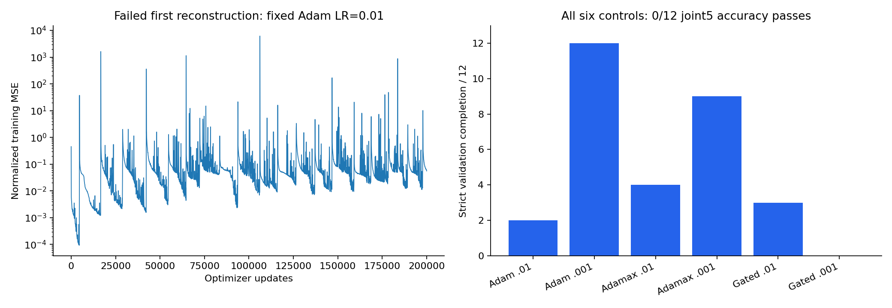
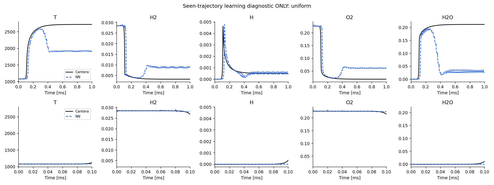
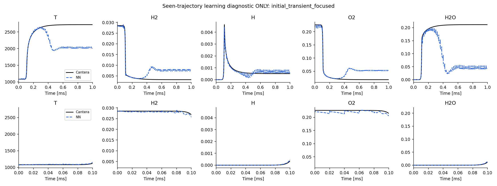

기존 결과는 문헌 성능 재현에 실패했다. 끝까지 계산된 것과 Cantera 곡선을 정확히 맞춘 것은 다르다. 첫 모델의 전체 31개 미지 조건에서 raw joint9 정확도 통과는 0개였다. ANN 쪽은 저자 공개 가중치의 추론을 재현한 것이고, DeepONet은 독자 구현을 새로 학습한 것이므로 같은 수준의 재현 검증으로 비교할 수 없다.
기존 넓은 조건 실험은 10 ms 동안 2 μs씩 5,000번 자기 예측을 되먹였다. 상세 문헌은 더 좁은 조건에서 1 ms 동안 20 μs씩 50번 진행한다. 문헌은 대표 5변수의 5제곱근·min/max 정규화 곡선과 MAE를 주로 보여주지만, 우리의 전체 성공 기준은 원래 단위의 T＋8반응종 NRMSE다. 따라서 같은 난도와 같은 성공 기준의 비교는 아니다. 다만 실패한 첫 문헌 근사는 이미 0.5 ms로 줄인 실험이고 대표 5변수도 0/31 통과였으므로, 이 차이만으로 기존 실패를 설명할 수는 없다.
이전 2023 초고 근사 대신 저자 학위논문 3장의 상세 방법을 다시 확인했다. 아래의 차이를 발견했다. 여러 항목을 함께 바꾸는 재구현만으로 특정 하나를 단독 원인이라고 단정하지 않는다.
| 항목 | 이전 구현 | 새 상세 구현 |
|---|---|---|
| Method source | 2023 early-preprint approximation | Detailed thesis chapter 3 |
| Hidden networks | Plain dense MLP | Modified MLP with two encoders and gates in every sub-network |
| Condition parameter | No ParamNet | Separate equivalence-ratio ParamNet |
| Optimizer / LR | Adam, fixed 0.01 | Adamax, 0.01 times 0.9^(update/5000) |
| Training objective | Single future-state MSE only | 100k single-step updates, then 20k final-5-step endpoint MSE |
| Chemistry | Cantera h2o2.yaml (GRI-derived) | Pinned public Burke release; verified H2/air reduction |
| Train / horizon / window | 25 IC / 0.5ms / 20us | 99 IC / 1ms / 40us; inference in 20us windows |
| Exact fidelity limits | Several missing details were assumptions | Private fusion and exact 20-reaction mechanism remain unavailable |
고정 학습률 0.01에서 loss가 크게 튀었다. 동일 초기화·데이터·배치 추출·6,000회 업데이트로 비교하면 Adam의 학습률을 0.001로 낮췄을 때 검증 완주는 2/12에서 12/12로 개선됐으나, 대표 5변수 정확도 통과는 둘 다 0/12였다. 따라서 학습 불안정은 실제 문제지만, 이것만 고치면 해결된다는 증거는 없다.

Adamax와 수정 MLP 조합은 한 번의 예측 MSE를 더 낮췄지만, 자기 예측을 되먹이는 궤적 정확도는 여전히 실패했다. 이미 품질이 낮은 단기 가중치에 K5 학습만 덧붙이는 별도 실험에서도 통과가 없었다. 작은 단일 예측 오차가 장기 누적 오차를 보장하지 않는다는 점이 확인됐다. 서로 완주한 조건이 다르므로 각 방식의 중간값을 같은 조건인 것처럼 비교하지 않았다.
물리 보정이 반응속도를 정답으로 만들어 주지는 않는다. 원소량·양수성·엔탈피를 맞추더라도 반응이 진행되는 속도와 점화 시각은 틀릴 수 있다. 첫 모델은 나머지 화학종을 복원하는 ANN을 거치기 전, 대표 5변수 예측 자체부터 실패했다. 따라서 복원 ANN이나 보정기만의 문제라고 볼 수 없다. 이미 작은 예측 오차를 가진 모델에 보정이 유용했던 문헌 결과를, 기본 반응 궤적부터 틀린 모델에 같은 효과가 난다는 뜻으로 해석하면 안 된다.
아래는 같은 궤적을 이미 본 상태에서 시작점 추출 비중만 바꾼 통제 실험이다. 초기 가중치와 Adam 상태, 이후 업데이트 수, 배치 크기, 학습률 규칙을 같게 유지했다. 이는 학습 가능성 진단이며, 미지 조건에 대한 성능이 아니다. 사진 한 장이나 낮은 loss만으로 재현 성공이라고 하지 않는다.
| 조건 | 선택 update | 수치 완주 | 곡선 joint5 | 상태 유효 | 최악 NRMSE |
|---|---|---|---|---|---|
| uniform | 5000 | True | False | False | 0.762398649543703 |
| initial_transient_focused | 8000 | True | False | True | 0.6843636760978834 |


문헌의 수정 MLP·ParamNet·Adamax 감소 규칙·100k 사전학습＋20k 후속 K5 학습·99개 학습 조건을 구현한다. 후속 학습은 5번째 끝점의 MSE이며, 모든 중간 오차 평균을 쓰는 예전 실험과 다르다. 훈련 중 정답으로 중간 상태를 바꾸거나 물리 보정을 넣지 않는다. 대표 변수 자체의 예측 오차와 나머지 화학종 복원 ANN 오차를 별도로 측정한다.
미지 조건은 모델 선택 후 평가한다. NRMSE는 RMSE(Cantera,NN)/RMS(Cantera)인 무차원 비율이다. 전체 기간과 초기 0.1 ms를 모두 본다. 음수가 있어도 계속 그린 곡선 진단, 잘못된 상태에서 중단하는 raw, clipping＋원소 투영＋엔탈피 보정 결과를 구분한다. 물리적으로 유효하지 않은 곡선 진단을 raw 성공으로 세지 않는다.
남은 재현 한계: 공개 Burke 원본의 검증된 H2/air 축소본은 10종·25개 Cantera rate entry다. 저자가 사용한 20반응 파일 자체는 확보하지 못했다. 세 망의 정확한 비공개 융합 코드와 log(0) 처리도 없으므로 가정은 config에 명시했다. 새 모델의 검증·테스트가 끝나기 전에는 문헌 성능을 재현했다고 말할 수 없다.